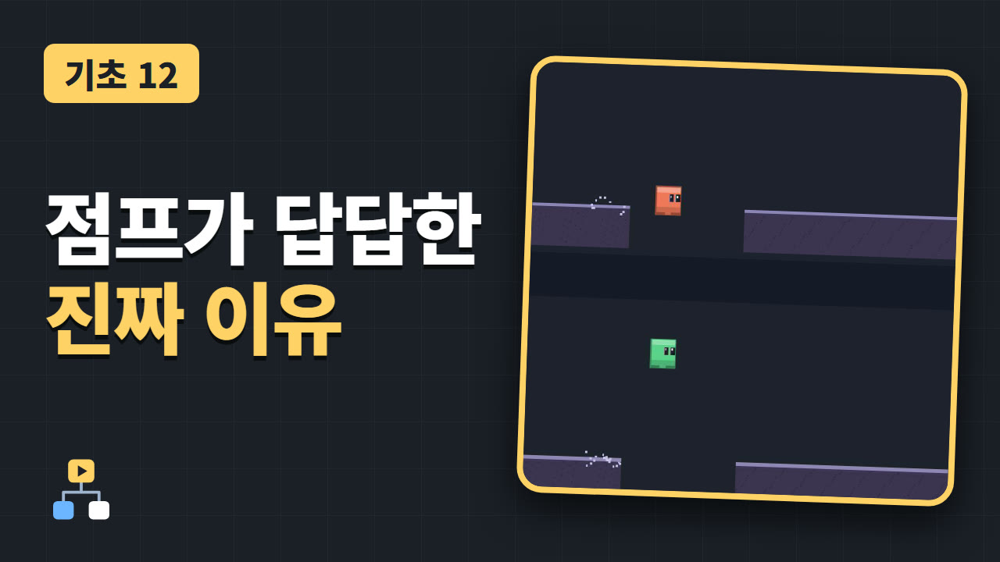

점프가 답답한 건 손 탓이 아닙니다
Godot 기초 12

점프 게임의 조작이 기분 좋아지는 세 가지를 코드 몇 줄로 넣습니다.
코요테 타임, 점프 버퍼, 가변 점프. 같은 순간에 같은 버튼을 눌러도 결과가 달라지는 것을 나란히 비교합니다.
예제 프로젝트 받기 (.zip)
영상은 곧 공개됩니다
여는 방법
- 받은 파일의 압축을 풉니다.
- Godot 4.7.2을 켜고, 프로젝트 매니저에서 "가져오기"를 누릅니다.
- 압축을 푼 폴더 안의
project.godot을 고릅니다. - 오른쪽 위의 실행 버튼(F5)을 누릅니다.
실행하면 영상에 나온 비교 장면이 자동으로 재생됩니다. 위쪽 줄은 세 가지를 끈 캐릭터, 아래쪽 줄은 켠 캐릭터입니다. 강의에서 본 코드는 player.gd에 있습니다.
player.gd
extends CharacterBody2D
## 점프가 기분 좋아지는 세 가지: 코요테 타임, 점프 버퍼, 가변 점프.
signal jumped
signal landed
const SPEED := 240.0
const JUMP_VELOCITY := -660.0
const GRAVITY := 1960.0
const COYOTE_TIME := 0.1 # 발판을 떠난 뒤에도 점프를 받아주는 시간
const BUFFER_TIME := 0.1 # 착지 전에 누른 점프를 기억하는 시간
const JUMP_CUT := 0.4 # 버튼을 일찍 떼면 남기는 상승 속도의 비율
@export var use_coyote := true
@export var use_buffer := true
@export var use_variable := true
var pilot = null # 녹화용 자동 조종. 없으면 키보드를 읽는다.
var coyote_left := 0.0
var buffer_left := 0.0
var rising := false # 점프로 올라가는 중인가
var was_on_floor := true
func _physics_process(delta: float) -> void:
var on_floor := is_on_floor()
if on_floor and not was_on_floor:
landed.emit()
was_on_floor = on_floor
# 1. 코요테 타임: 바닥에 있는 동안 시간을 채워 두고, 떠나면 줄인다.
if on_floor:
coyote_left = COYOTE_TIME if use_coyote else 0.0
else:
coyote_left -= delta
velocity.y += GRAVITY * delta
# 2. 점프 버퍼: 누른 사실을 잠깐 기억한다.
var pressed := _jump_pressed()
if pressed and use_buffer:
buffer_left = BUFFER_TIME
else:
buffer_left -= delta
var wants_jump := pressed or buffer_left > 0.0
var can_jump := on_floor or coyote_left > 0.0
if wants_jump and can_jump:
velocity.y = JUMP_VELOCITY
coyote_left = 0.0
buffer_left = 0.0
rising = true
jumped.emit()
# 3. 가변 점프: 올라가는 중에 버튼을 떼면 상승을 줄인다.
if rising and velocity.y >= 0.0:
rising = false
if use_variable and rising and not _jump_held():
velocity.y *= JUMP_CUT
rising = false
velocity.x = _axis() * SPEED
move_and_slide()
func reset() -> void:
velocity = Vector2.ZERO
coyote_left = 0.0
buffer_left = 0.0
rising = false
was_on_floor = true
func _axis() -> float:
return pilot.axis if pilot else Input.get_axis("ui_left", "ui_right")
func _jump_pressed() -> bool:
return pilot.pressed if pilot else Input.is_action_just_pressed("ui_accept")
func _jump_held() -> bool:
return pilot.held if pilot else Input.is_action_pressed("ui_accept")